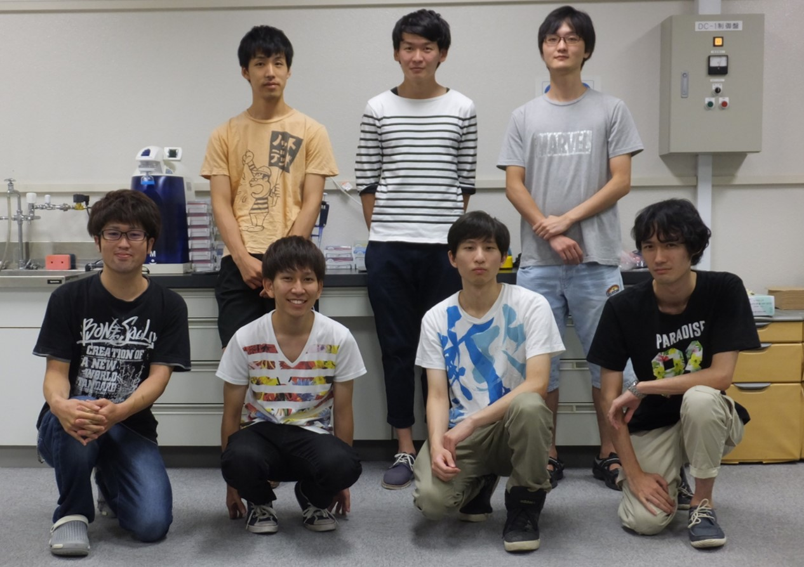

Top
Design
What is logic gate
What is XOR
DNA Interference Detector
Method
Experiment
Dry experiment
Wet experiment
Member

Team Member
Undergraduate Students
B4 Aosaki,Yuya
B4 Tanaka,Yuki
B4 Hidaka,Taisei
B4 Yoshida,Yuki
Graduate Mentors
M1 Omagari,Tomotaka
M1 Nishijima, Katsuhiro
M1 Ogata, Kento
Faculity Mentors
Associate Professor Nakakuki,Takasi